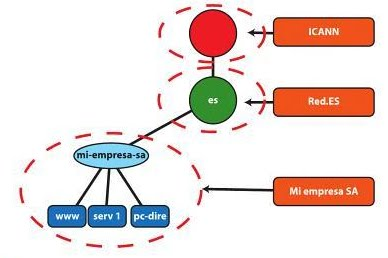
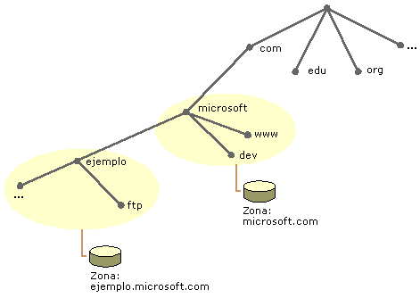

4.1. El Espacio de Nombres de Dominio
- El servicio DNS es una base de datos en la que se almacenan las asociaciones de nombres de dominios y direcciones IP. Está clasificada por nombres de dominio, como en un árbol invertido llamado espacio de nombres de dominio.
El árbol comienza en el nodo raíz(.), situado en el nivel superior. Por debajo, puede existir un número indeterminado de nodos.
El siguiente nivel se denomina TLD (Top Level Domain), como com, org, edu, es…
El nombre de un nodo está formado por el conjunto de nombres que forman el itinerario desde ese nodo hasta la raíz. Los nombres se separan con un punto.
Un nombre de dominio correcto se denomina FQDN (Fully Qualified Domain Name), como por ejemplo www.ejemplo.com. (incluyendo el punto final)

4.1.1. Estructura
- La cantidad de información que incluye este espacio de nombres de dominio es demasiado grande para almacenarla de manera centralizada, además la velocidad del sistema sería mucho menor. Por ello la estructura de DNS se basa en dos conceptos:
Delegación.
Jerarquización
¿DÓNDE SE GUARDA LA INFORMACIÓN? Cada servidor DNS tiene un FICHERO DE ZONA en el que almacena toda la información de el/los dominio/s sobre los que está autorizado y no ha sub-delegado. En estructuras denominadas Registros de Recursos(RR)
¿QUIEN SE ENCARGA DEL NIVEL RAIZ Y DE LOS TLD? Una organización denominada ICANN, que a su vez delega los dominios de siguientes niveles en otras autoridades-servidores DNS. (p. ej: en españa RED.es se encarga del dominio .es)
{kind=link}
4.1.2. Dominios y zonas
Una zona se inicia como una base de datos de almacenamiento para un único nombre de dominio DNS. Si se agregan otros dominios inferiores (subdominios), éstos pueden formar parte de la misma zona o pertenecer a otra zona. Después de agregar un subdominio, se puede:
Administrarlo e incluirlo como parte de los registros de la zona original.
Delegarlo a otra zona creada para admitir el subdominio.
En la siguiente imagen se muestra el dominio microsoft.com, inicialmente, se configura como una zona única para todos los espacios de nombres DNS de Microsoft. Sin embargo, si añadimos subdominios podemos encontrar diferentes situaciones:

ejemplo.microsoft.com muestra un subdominio nuevo, este dominio es delegado fuera de la zona microsoft.com y administrado en su propia zona, por otro servidor DNS. En la configuración de zona de microsoft.com debe haber algún parametro que índique las zonas delegadas.
dev.microsoft.com NO utiliza la delegación en un subdominio, los datos del subdominio continúan formando parte de la zona microsoft.com, por lo que los administra el servidor DNS principal.
{kind=link}